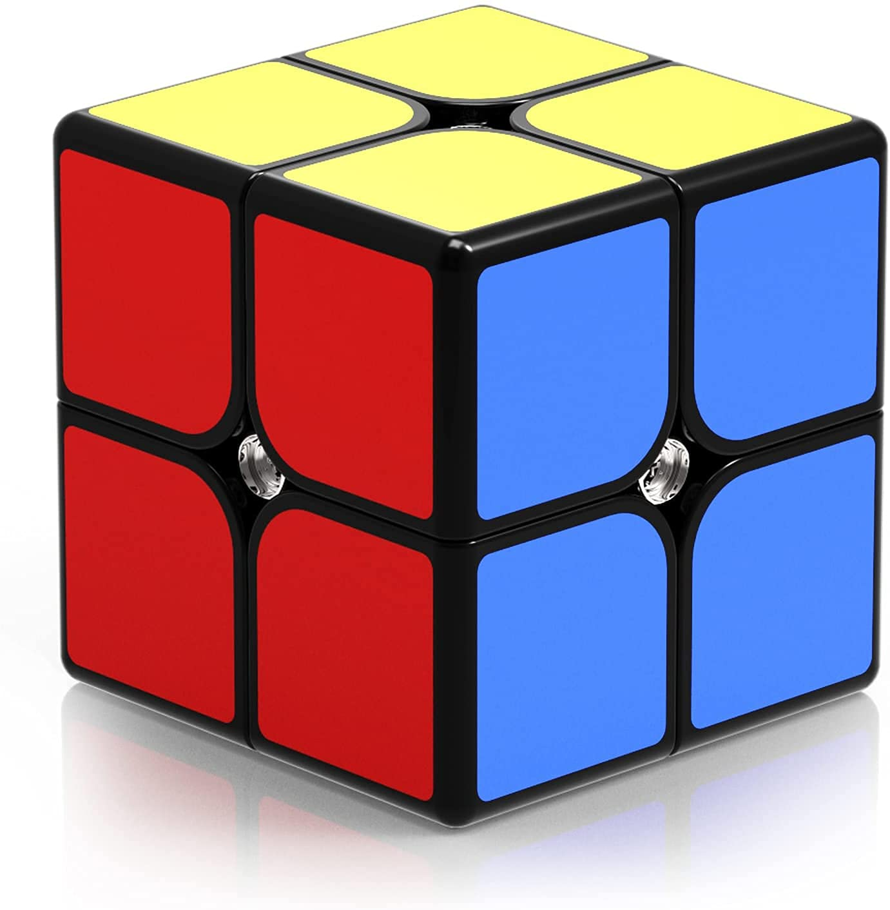

Please reference the solution guide from the official Rubik's Cube website

This is the top layer.
Find the corner piece that has a WHITE tile, a BLUE tile and an ORANGE tile.
Hold your Rubik's Mini to match one of the pictures below (with the WHITE-BLUE-ORANGE corner on the right).
Follow this algorithm to move the WHITE-BLUE-ORANGE corner from the top layer to the bottom layer. Then move to Action 3 on page 13.
Now hold your Rubik's Mini so the white tile with the Rubik's logo is facing the ceiling and the WHITE-BLUE-RED corner is on the LEFT.
Twist the DOWN face until your Rubik's Mini matches one of the pictures below.
Begin by holding your Rubik's Mini so that the WHITE-BLUE-ORANGE corner is on the LEFT. The logo is still facing the ceiling.
Find the corner piece that has a WHITE tile, a GREEN tile and an ORANGE tile.
Hold your Rubik's Mini to match one of the pictures below and follow the directions to move the WHITE-GREEN-ORANGE corner to the bottom layer.
Twist the DOWN face until your Rubik's Mini matches one of the pictures below.
You've solved the third corner!
Begin by holding your Rubik's Mini so the WHITE-GREEN-ORANGE corner is on the LEFT. The logo is still facing the ceiling.
Find the corner piece that has a WHITE tile, a GREEN tile and a RED tile.
Holding your Rubik's Mini to match one of the pictures below and follow the directions to move the WHITE-GREEN-RED corner to the bottom layer.
Twist the DOWN face until your Rubik's Mini matches one of the picutres on page 19.
You've solved the top layer!
Begin by holding your Rubik's Mini so the WHITE face is on the bottom (DOWN face).
Match the UP face to one of the pictures below:
Follow this algorithm:
The words underneath the turns are a chant to help you remember the algorithm. Notice the RIGHT face turns in opposite directions every other time and the UP face always turns clockwise.
If you do not have all YELLOW tiles on the UP face, rematch your Rubik's Mini to one of the picutres in Action 1 on page 20 and repeat the algorithm in Action 2. You may need to do this 2 or 3 times.
If you have all Yellow on the UP face, go to the next page.
Continue to the next step 'Place the Yellow Corners Correctly' on the following page
Begin by holding your Rubik's Mini with YELLOW on the UP face.
Twist the top layer until the colored tiles of two corners match the bottom layer.
Look at the faces of your Rubik's Mini. Are all the colors like this?
Yeah! You've solved the Rubik's Mini!
If your Rubik's Mini is not solved then got o Action 2 on page 24.
Hold your Rubik's Mini so it matches one of the pictures.
Red arrows show the conrers that need to swap.
Follow this algorithm.
The words underneath the turns are a chant to help you remember the algorithm.
If your Rubik's Mini is not solved, you need to repeat Actions 1-3.